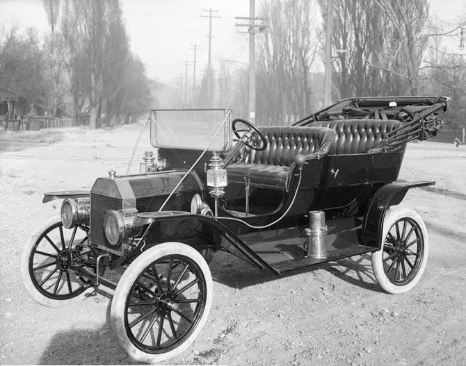
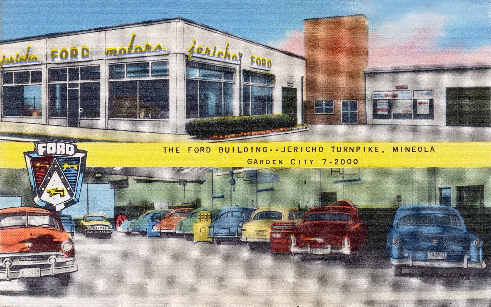
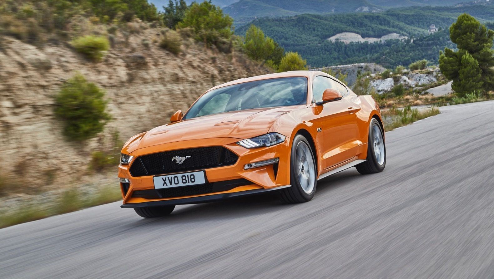

Ford History
Історія легендарної марки Ford бере свій початок у далекому 1903 році, коли американський бізнесмен і винахідник Генрі Форд заснував компанію «Форд Мотор» (Ford Motor Company), яка випускала найдешевші на той час автомобілі. З тієї визначальної дати минуло більше століття, але девіз великого експерементатора Генрі Форда «автомобіль для всіх» живий і досі!
Основні віхи Ford Motor Company:
1903р. — заснування компанії Ford Motor Company Генрі Фордом, актив якої склав 28 тис. долларів.
1904 — 1908рр. — розпочато виробництво перших двухциліндрових автомобілів, випуск моделі «T», так званої «бляшаної Ліззі», кожен з яких коштував лише 260 долларів. Вже у перший рік продано більше 10 тис. машин цієї моделі.
1911 р. — у Великобританії відкрита дочірня компанія Ford зі складальним цехом.
1913 — 1923 рр. — вперше в історії автомобілебудування введено метод конвеєрної технології зборки автомобілів, що дозволило за рік зростити виробництво на 50%. На підприємствах Форд встановлено 8-годинний робочий день. До середини 1914 р. було випущено 500 тисяч автомобілів «T», до 1923 кожний другий автомобіль вироблявся на заводах «Форд Мотор».
1917 р. — відкрилися філіали компанії в Ірландії і Буенос Айресі. Компанія розпочала виробництво вантажівок и тракторів.
1922р. — Форд стає власником компанії «Лінкольн», інноваційний Фордівський підхід досить яскраво проявився у використанні нових кольорів на виробництві авто — на зміну консервативним чорним приходять зелені, блакитні, коричневі автомобілі.
968-1970 рр. — розробка гальмівної саморегульованої системи, поява спортивної 1,6-літрової моделі Escort Twin Cam, яка, успішно відкривши сезон, перемогла на кільцевому заїзді в Ірландії, Австрійських Альпах і Шотландії на протязі восьми тижнів. Escort також переміг у відомому Раллі 1000 озер у Фінляндії, що допомогло Форду зайняти міцні позиції у Світовому раллі-чемпіонаті. Впроваджено системи електронного управління швидкістю автомобіля.
Сьогодні у Ford Motor Company є свої виробничі та торгові центри у 30 країнах світу. Компанія щорічно виробляє мільони легкових автомобілів, вантажівок і тракторів. Компанія реалізує близько 70 моделей машин по всьому світу, вироблених під марками Ford, Lincoln, Mercury, Jaguar и Aston Martin. У «великій трійці» американського автобізнесу «Форд Мотор» посідає почесне друге місце за обсягами продажів.